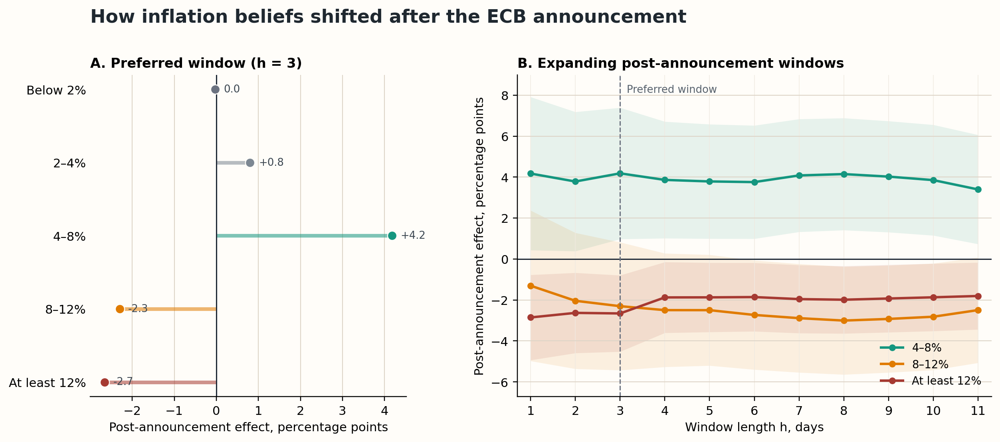
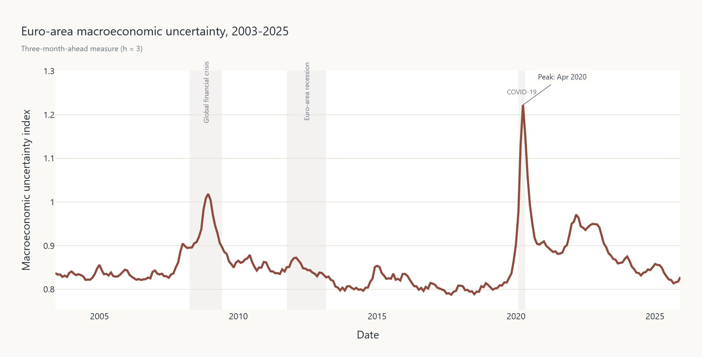

Research
Research
My interests are in macroeconomics, monetary economics, fiscal policy, and macro-finance, with a particular interest in how policy shocks shape expectations, asset prices, and household outcomes.
Current Project
Can Monetary Policy Move Household Expectations? Evidence from the ECB's July 2022 Policy Turn (Master's Thesis)
Abstract
On 21 July 2022, amid inflation above 8%, the ECB delivered its first rate increase since 2011 and raised rates by 50 basis points - twice the increase it had signaled. I use daily interview timing in Wave 31 of the Bundesbank Online Panel Households to compare German respondents surveyed immediately before (19-20 July) and after (22-24 July) the announcement. One-year inflation expectations were 0.53 percentage points lower after the decision. Households shifted probability mass away from inflation of at least 8% - especially outcomes of at least 12% - toward the still-elevated 4-8% range, while expected lending and savings rates rose. Five-year expectations declined less precisely, and unemployment expectations were unchanged. The results suggest that a salient, partly unexpected monetary-policy turn can reach household beliefs and moderate perceived near-term tail risks, although simultaneous energy-market news means the estimates should be interpreted as reduced-form post-announcement effects rather than a pure monetary-policy shock.

Replication Project
Replication of Comunale & Nguyen (2025): MacroEconomic Uncertainty for the Euro Area
This project replicates the euro-area macroeconomic uncertainty measure in Comunale and Nguyen (2025). I assembled and cleaned a large monthly macro-financial panel for 19 euro-area countries and reproduced the main uncertainty series using factor extraction, forecast-error estimation, and stochastic-volatility methods in R.
